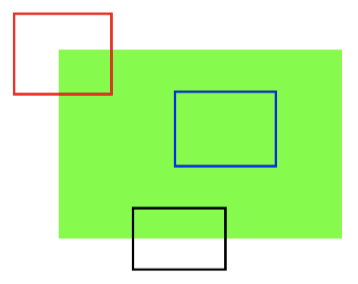

<!DOCTYPE HTML>
<html lang="zh-hans" >
    <head>
        <meta charset="UTF-8">
        <meta content="text/html; charset=utf-8" http-equiv="Content-Type">
        <title>4.1 角点特征 · opencv</title>
        <meta http-equiv="X-UA-Compatible" content="IE=edge" />
        <meta name="description" content="">
        <meta name="generator" content="GitBook 3.2.3">
        
        
        
    
    <link rel="stylesheet" href="../gitbook/style.css">

    
            
                
                <link rel="stylesheet" href="../gitbook/gitbook-plugin-code/plugin.css">
                
            
                
                <link rel="stylesheet" href="../gitbook/gitbook-plugin-splitter/splitter.css">
                
            
                
                <link rel="stylesheet" href="../gitbook/gitbook-plugin-expandable-chapters/expandable-chapters.css">
                
            
                
                <link rel="stylesheet" href="../gitbook/gitbook-plugin-katex/katex.min.css">
                
            
                
                <link rel="stylesheet" href="../gitbook/gitbook-plugin-highlight/website.css">
                
            
                
                <link rel="stylesheet" href="../gitbook/gitbook-plugin-search/search.css">
                
            
                
                <link rel="stylesheet" href="../gitbook/gitbook-plugin-fontsettings/website.css">
                
            
        

    

    
        
    
        
    
        
    
        
    
        
    
        
    

        
    
    
    
    
    <meta name="HandheldFriendly" content="true"/>
    <meta name="viewport" content="width=device-width, initial-scale=1, user-scalable=no">
    <meta name="apple-mobile-web-app-capable" content="yes">
    <meta name="apple-mobile-web-app-status-bar-style" content="black">
    <link rel="apple-touch-icon-precomposed" sizes="152x152" href="../gitbook/images/apple-touch-icon-precomposed-152.png">
    <link rel="shortcut icon" href="../gitbook/images/favicon.ico" type="image/x-icon">

    
    <link rel="next" href="section1.html" />
    
    
    <link rel="prev" href="ReadMe.html" />
    

    <script src="../gitbook/gitbook-plugin-graph/d3.min.js"></script>
    <script src="../gitbook/gitbook-plugin-graph/function-plot.js"></script>    

    
    <link rel="stylesheet" href="../gitbook/gitbook-plugin-chart/c3/c3.min.css">
    <script src="../gitbook/gitbook-plugin-chart/c3/d3.min.js"></script>
    <script src="../gitbook/gitbook-plugin-chart/c3/c3.min.js"></script>
    

    </head>
    <body>
        
<div class="book">
    <div class="book-summary">
        
            
<div id="book-search-input" role="search">
    <input type="text" placeholder="输入并搜索" />
</div>

            
                <nav role="navigation">
                


<ul class="summary">
    
    

    

    
        
        
    
        <li class="chapter " data-level="1.1" data-path="../">
            
                <a href="../">
            
                    
                    Introduction
            
                </a>
            

            
        </li>
    
        <li class="chapter " data-level="1.2" data-path="../OpenCV简介/ReadMe.html">
            
                <a href="../OpenCV简介/ReadMe.html">
            
                    
                    1. OpenCV简介
            
                </a>
            

            
            <ul class="articles">
                
    
        <li class="chapter " data-level="1.2.1" data-path="../OpenCV简介/section0.html">
            
                <a href="../OpenCV简介/section0.html">
            
                    
                    1.1 图像处理简介
            
                </a>
            

            
        </li>
    
        <li class="chapter " data-level="1.2.2" data-path="../OpenCV简介/section1.html">
            
                <a href="../OpenCV简介/section1.html">
            
                    
                    1.2 OpenCV简介及安装方法
            
                </a>
            

            
        </li>
    
        <li class="chapter " data-level="1.2.3" data-path="../OpenCV简介/section2.html">
            
                <a href="../OpenCV简介/section2.html">
            
                    
                    1.3 OpenCV的模块
            
                </a>
            

            
        </li>
    

            </ul>
            
        </li>
    
        <li class="chapter " data-level="1.3" data-path="../OpenCV基本操作/ReadMe.html">
            
                <a href="../OpenCV基本操作/ReadMe.html">
            
                    
                    2 OpenCV基本操作
            
                </a>
            

            
            <ul class="articles">
                
    
        <li class="chapter " data-level="1.3.1" data-path="../OpenCV基本操作/section0.html">
            
                <a href="../OpenCV基本操作/section0.html">
            
                    
                    2.1 图像的基础操作
            
                </a>
            

            
        </li>
    
        <li class="chapter " data-level="1.3.2" data-path="../OpenCV基本操作/section1.html">
            
                <a href="../OpenCV基本操作/section1.html">
            
                    
                    2.2 算数操作
            
                </a>
            

            
        </li>
    

            </ul>
            
        </li>
    
        <li class="chapter " data-level="1.4" data-path="../OpenCV图像处理/ReadMe.html">
            
                <a href="../OpenCV图像处理/ReadMe.html">
            
                    
                    3 OpenCV图像处理
            
                </a>
            

            
            <ul class="articles">
                
    
        <li class="chapter " data-level="1.4.1" data-path="../OpenCV图像处理/section0.html">
            
                <a href="../OpenCV图像处理/section0.html">
            
                    
                    3.1 几何变换
            
                </a>
            

            
        </li>
    
        <li class="chapter " data-level="1.4.2" data-path="../OpenCV图像处理/section1.html">
            
                <a href="../OpenCV图像处理/section1.html">
            
                    
                    3.2 形态学操作
            
                </a>
            

            
        </li>
    
        <li class="chapter " data-level="1.4.3" data-path="../OpenCV图像处理/section2.html">
            
                <a href="../OpenCV图像处理/section2.html">
            
                    
                    3.3 图像平滑
            
                </a>
            

            
        </li>
    
        <li class="chapter " data-level="1.4.4" data-path="../OpenCV图像处理/section3.html">
            
                <a href="../OpenCV图像处理/section3.html">
            
                    
                    3.4 直方图
            
                </a>
            

            
        </li>
    
        <li class="chapter " data-level="1.4.5" data-path="../OpenCV图像处理/section4.html">
            
                <a href="../OpenCV图像处理/section4.html">
            
                    
                    3.5 边缘检测
            
                </a>
            

            
        </li>
    
        <li class="chapter " data-level="1.4.6" data-path="../OpenCV图像处理/section5.html">
            
                <a href="../OpenCV图像处理/section5.html">
            
                    
                    3.6 模版匹配和霍夫变换
            
                </a>
            

            
        </li>
    

            </ul>
            
        </li>
    
        <li class="chapter " data-level="1.5" data-path="ReadMe.html">
            
                <a href="ReadMe.html">
            
                    
                    4 图像特征提取与描述
            
                </a>
            

            
            <ul class="articles">
                
    
        <li class="chapter active" data-level="1.5.1" data-path="section0.html">
            
                <a href="section0.html">
            
                    
                    4.1 角点特征
            
                </a>
            

            
        </li>
    
        <li class="chapter " data-level="1.5.2" data-path="section1.html">
            
                <a href="section1.html">
            
                    
                    4.2 Harris和Shi-Tomas算法
            
                </a>
            

            
        </li>
    
        <li class="chapter " data-level="1.5.3" data-path="section2.html">
            
                <a href="section2.html">
            
                    
                    4.3 SIFT/SURF算法
            
                </a>
            

            
        </li>
    

            </ul>
            
        </li>
    
        <li class="chapter " data-level="1.6" data-path="../视频操作/ReadMe.html">
            
                <a href="../视频操作/ReadMe.html">
            
                    
                    5 视频操作
            
                </a>
            

            
            <ul class="articles">
                
    
        <li class="chapter " data-level="1.6.1" data-path="../视频操作/section0.html">
            
                <a href="../视频操作/section0.html">
            
                    
                    5.1 视频读写
            
                </a>
            

            
        </li>
    
        <li class="chapter " data-level="1.6.2" data-path="../视频操作/section1.html">
            
                <a href="../视频操作/section1.html">
            
                    
                    5.2 视频追踪
            
                </a>
            

            
        </li>
    

            </ul>
            
        </li>
    
        <li class="chapter " data-level="1.7" data-path="../案例/ReadMe.html">
            
                <a href="../案例/ReadMe.html">
            
                    
                    6 案例:人脸案例
            
                </a>
            

            
        </li>
    

    

    <li class="divider"></li>

    <li>
        <a href="https://www.gitbook.com" target="blank" class="gitbook-link">
            本书使用 GitBook 发布
        </a>
    </li>
</ul>


                </nav>
            
        
    </div>

    <div class="book-body">
        
            <div class="body-inner">
                
                    

<div class="book-header" role="navigation">
    

    <!-- Title -->
    <h1>
        <i class="fa fa-circle-o-notch fa-spin"></i>
        <a href=".." >4.1 角点特征</a>
    </h1>
</div>


                    <div class="page-wrapper" tabindex="-1" role="main">
                        <div class="page-inner">
                            
<div id="book-search-results">
    <div class="search-noresults">
    
                                <section class="normal markdown-section">
                                
                                <h1 id="&#x89D2;&#x70B9;&#x7279;&#x5F81;">&#x89D2;&#x70B9;&#x7279;&#x5F81;</h1>
<p><strong>&#x5B66;&#x4E60;&#x76EE;&#x6807;</strong></p>
<ul>
<li>&#x7406;&#x89E3;&#x56FE;&#x50CF;&#x7684;&#x7279;&#x5F81;</li>
<li>&#x77E5;&#x9053;&#x56FE;&#x50CF;&#x7684;&#x89D2;&#x70B9;</li>
</ul>
<hr>
<h1 id="1-&#x56FE;&#x50CF;&#x7684;&#x7279;&#x5F81;">1 &#x56FE;&#x50CF;&#x7684;&#x7279;&#x5F81;</h1>
<p>&#x5927;&#x591A;&#x6570;&#x4EBA;&#x90FD;&#x73A9;&#x8FC7;&#x62FC;&#x56FE;&#x6E38;&#x620F;&#x3002;&#x9996;&#x5148;&#x62FF;&#x5230;&#x5B8C;&#x6574;&#x56FE;&#x50CF;&#x7684;&#x788E;&#x7247;&#xFF0C;&#x7136;&#x540E;&#x628A;&#x8FD9;&#x4E9B;&#x788E;&#x7247;&#x4EE5;&#x6B63;&#x786E;&#x7684;&#x65B9;&#x5F0F;&#x6392;&#x5217;&#x8D77;&#x6765;&#x4ECE;&#x800C;&#x91CD;&#x5EFA;&#x8FD9;&#x5E45;&#x56FE;&#x50CF;&#x3002;&#x5982;&#x679C;&#x628A;&#x62FC;&#x56FE;&#x6E38;&#x620F;&#x7684;&#x539F;&#x7406;&#x5199;&#x6210;&#x8BA1;&#x7B97;&#x673A;&#x7A0B;&#x5E8F;&#xFF0C;&#x90A3;&#x8BA1;&#x7B97;&#x673A;&#x5C31;&#x4E5F;&#x4F1A;&#x73A9;&#x62FC;&#x56FE;&#x6E38;&#x620F;&#x4E86;&#x3002;</p>
<p>&#x5728;&#x62FC;&#x56FE;&#x65F6;&#xFF0C;&#x6211;&#x4EEC;&#x8981;&#x5BFB;&#x627E;&#x4E00;&#x4E9B;&#x552F;&#x4E00;&#x7684;&#x7279;&#x5F81;&#xFF0C;&#x8FD9;&#x4E9B;&#x7279;&#x5F81;&#x8981;&#x9002;&#x4E8E;&#x88AB;&#x8DDF;&#x8E2A;&#xFF0C;&#x5BB9;&#x6613;&#x88AB;&#x6BD4;&#x8F83;&#x3002;&#x6211;&#x4EEC;&#x5728;&#x4E00;&#x526F;&#x56FE;&#x50CF;&#x4E2D;&#x641C;&#x7D22;&#x8FD9;&#x6837;&#x7684;&#x7279;&#x5F81;&#xFF0C;&#x627E;&#x5230;&#x5B83;&#x4EEC;&#xFF0C;&#x800C;&#x4E14;&#x4E5F;&#x80FD;&#x5728;&#x5176;&#x4ED6;&#x56FE;&#x50CF;&#x4E2D;&#x627E;&#x5230;&#x8FD9;&#x4E9B;&#x7279;&#x5F81;&#xFF0C;&#x7136;&#x540E;&#x518D;&#x628A;&#x5B83;&#x4EEC;&#x62FC;&#x63A5;&#x5230;&#x4E00;&#x8D77;&#x3002;&#x6211;&#x4EEC;&#x7684;&#x8FD9;&#x4E9B;&#x80FD;&#x529B;&#x90FD;&#x662F;&#x5929;&#x751F;&#x7684;&#x3002;</p>
<p>&#x90A3;&#x8FD9;&#x4E9B;&#x7279;&#x5F81;&#x662F;&#x4EC0;&#x4E48;&#x5462;&#xFF1F;&#x6211;&#x4EEC;&#x5E0C;&#x671B;&#x8FD9;&#x4E9B;&#x7279;&#x5F81;&#x4E5F;&#x80FD;&#x88AB;&#x8BA1;&#x7B97;&#x673A;&#x7406;&#x89E3;&#x3002;</p>
<p>&#x5982;&#x679C;&#x6211;&#x4EEC;&#x6DF1;&#x5165;&#x7684;&#x89C2;&#x5BDF;&#x4E00;&#x4E9B;&#x56FE;&#x50CF;&#x5E76;&#x641C;&#x7D22;&#x4E0D;&#x540C;&#x7684;&#x533A;&#x57DF;&#xFF0C;&#x4EE5;&#x4E0B;&#x56FE;&#x4E3A;&#x4F8B;&#xFF1A;</p>
<p></p>
<p>&#x5728;&#x56FE;&#x50CF;&#x7684;&#x4E0A;&#x65B9;&#x7ED9;&#x51FA;&#x4E86;&#x516D;&#x4E2A;&#x5C0F;&#x56FE;&#x3002;&#x627E;&#x5230;&#x8FD9;&#x4E9B;&#x5C0F;&#x56FE;&#x5728;&#x539F;&#x59CB;&#x56FE;&#x50CF;&#x4E2D;&#x7684;&#x4F4D;&#x7F6E;&#x3002;&#x4F60;&#x80FD;&#x627E;&#x5230;&#x591A;&#x5C11;&#x6B63;&#x786E;&#x7ED3;&#x679C;&#x5462;&#xFF1F;</p>
<p>A &#x548C; B &#x662F;&#x5E73;&#x9762;&#xFF0C;&#x800C;&#x4E14;&#x5B83;&#x4EEC;&#x7684;&#x56FE;&#x50CF;&#x4E2D;&#x5F88;&#x591A;&#x5730;&#x65B9;&#x90FD;&#x5B58;&#x5728;&#x3002;&#x5F88;&#x96BE;&#x627E;&#x5230;&#x8FD9;&#x4E9B;&#x5C0F;&#x56FE;&#x7684;&#x51C6;&#x786E;&#x4F4D;&#x7F6E;&#x3002;</p>
<p>C &#x548C; D &#x4E5F;&#x5F88;&#x7B80;&#x5355;&#x3002;&#x5B83;&#x4EEC;&#x662F;&#x5EFA;&#x7B51;&#x7684;&#x8FB9;&#x7F18;&#x3002;&#x53EF;&#x4EE5;&#x627E;&#x5230;&#x5B83;&#x4EEC;&#x7684;&#x8FD1;&#x4F3C;&#x4F4D;&#x7F6E;&#xFF0C;&#x4F46;&#x662F;&#x51C6;&#x786E;&#x4F4D;&#x7F6E;&#x8FD8;&#x662F;&#x5F88;&#x96BE;&#x627E;&#x5230;&#x3002;&#x8FD9;&#x662F;&#x56E0;&#x4E3A;&#xFF1A;&#x6CBF;&#x7740;&#x8FB9;&#x7F18;&#xFF0C;&#x6240;&#x6709;&#x7684;&#x5730;&#x65B9;&#x90FD;&#x4E00;&#x6837;&#x3002;&#x6240;&#x4EE5;&#x8FB9;&#x7F18;&#x662F;&#x6BD4;&#x5E73;&#x9762;&#x66F4;&#x597D;&#x7684;&#x7279;&#x5F81;&#xFF0C;&#x4F46;&#x662F;&#x8FD8;&#x4E0D;&#x591F;&#x597D;&#x3002;</p>
<p>&#x6700;&#x540E; E &#x548C; F &#x662F;&#x5EFA;&#x7B51;&#x7684;&#x4E00;&#x4E9B;&#x89D2;&#x70B9;&#x3002;&#x5B83;&#x4EEC;&#x80FD;&#x5F88;&#x5BB9;&#x6613;&#x7684;&#x88AB;&#x627E;&#x5230;&#x3002;&#x56E0;&#x4E3A;&#x5728;&#x89D2;&#x70B9;&#x7684;&#x5730;&#x65B9;&#xFF0C;&#x65E0;&#x8BBA;&#x4F60;&#x5411;&#x54EA;&#x4E2A;&#x65B9;&#x5411;&#x79FB;&#x52A8;&#x5C0F;&#x56FE;&#xFF0C;&#x7ED3;&#x679C;&#x90FD;&#x4F1A;&#x6709;&#x5F88;&#x5927;&#x7684;&#x4E0D;&#x540C;&#x3002;&#x6240;&#x4EE5;&#x53EF;&#x4EE5;&#x628A;&#x5B83;&#x4EEC;&#x5F53; &#x6210;&#x4E00;&#x4E2A;&#x597D;&#x7684;&#x7279;&#x5F81;&#x3002;&#x4E3A;&#x4E86;&#x66F4;&#x597D;&#x7684;&#x7406;&#x89E3;&#x8FD9;&#x4E2A;&#x6982;&#x5FF5;&#x6211;&#x4EEC;&#x518D;&#x4E3E;&#x4E2A;&#x66F4;&#x7B80;&#x5355;&#x7684;&#x4F8B;&#x5B50;&#x3002;</p>
<p></p>
<p>&#x5982;&#x4E0A;&#x56FE;&#x6240;&#x793A;&#xFF0C;&#x84DD;&#x8272;&#x6846;&#x4E2D;&#x7684;&#x533A;&#x57DF;&#x662F;&#x4E00;&#x4E2A;&#x5E73;&#x9762;&#x5F88;&#x96BE;&#x88AB;&#x627E;&#x5230;&#x548C;&#x8DDF;&#x8E2A;&#x3002;&#x65E0;&#x8BBA;&#x5411;&#x54EA;&#x4E2A;&#x65B9;&#x5411;&#x79FB;&#x52A8;&#x84DD;&#x8272;&#x6846;&#xFF0C;&#x90FD;&#x662F;&#x4E00;&#x6837;&#x7684;&#x3002;&#x5BF9;&#x4E8E;&#x9ED1;&#x8272;&#x6846;&#x4E2D;&#x7684;&#x533A;&#x57DF;&#xFF0C;&#x5B83;&#x662F;&#x4E00;&#x4E2A;&#x8FB9;&#x7F18;&#x3002;&#x5982;&#x679C;&#x6CBF;&#x5782;&#x76F4;&#x65B9;&#x5411;&#x79FB;&#x52A8;&#xFF0C;&#x5B83;&#x4F1A;&#x6539;&#x53D8;&#x3002;&#x4F46;&#x662F;&#x5982;&#x679C;&#x6CBF;&#x6C34;&#x5E73;&#x65B9;&#x5411;&#x79FB;&#x52A8;&#x5C31;&#x4E0D;&#x4F1A;&#x6539;&#x53D8;&#x3002;&#x800C;&#x7EA2;&#x8272;&#x6846;&#x4E2D;&#x7684;&#x89D2;&#x70B9;&#xFF0C;&#x65E0;&#x8BBA;&#x4F60;&#x5411;&#x90A3;&#x4E2A;&#x65B9;&#x5411;&#x79FB;&#x52A8;&#xFF0C;&#x5F97;&#x5230;&#x7684;&#x7ED3;&#x679C;&#x90FD;&#x4E0D;&#x540C;&#xFF0C;&#x8FD9;&#x8BF4;&#x660E;&#x5B83;&#x662F;&#x552F;&#x4E00;&#x7684;&#x3002; &#x6240;&#x4EE5;&#xFF0C;&#x6211;&#x4EEC;&#x8BF4;&#x89D2;&#x70B9;&#x662F;&#x4E00;&#x4E2A;&#x597D;&#x7684;&#x56FE;&#x50CF;&#x7279;&#x5F81;&#xFF0C;&#x4E5F;&#x5C31;&#x56DE;&#x7B54;&#x4E86;&#x524D;&#x9762;&#x7684;&#x95EE;&#x9898;&#x3002;</p>
<p>&#x89D2;&#x70B9;&#x662F;&#x56FE;&#x50CF;&#x5F88;&#x91CD;&#x8981;&#x7684;&#x7279;&#x5F81;,&#x5BF9;&#x56FE;&#x50CF;&#x56FE;&#x5F62;&#x7684;&#x7406;&#x89E3;&#x548C;&#x5206;&#x6790;&#x6709;&#x5F88;&#x91CD;&#x8981;&#x7684;&#x4F5C;&#x7528;&#x3002;&#x89D2;&#x70B9;&#x5728;&#x4E09;&#x7EF4;&#x573A;&#x666F;&#x91CD;&#x5EFA;&#x8FD0;&#x52A8;&#x4F30;&#x8BA1;&#xFF0C;&#x76EE;&#x6807;&#x8DDF;&#x8E2A;&#x3001;&#x76EE;&#x6807;&#x8BC6;&#x522B;&#x3001;&#x56FE;&#x50CF;&#x914D;&#x51C6;&#x4E0E;&#x5339;&#x914D;&#x7B49;&#x8BA1;&#x7B97;&#x673A;&#x89C6;&#x89C9;&#x9886;&#x57DF;&#x8D77;&#x7740;&#x975E;&#x5E38;&#x91CD;&#x8981;&#x7684;&#x4F5C;&#x7528;&#x3002;&#x5728;&#x73B0;&#x5B9E;&#x4E16;&#x754C;&#x4E2D;&#xFF0C;&#x89D2;&#x70B9;&#x5BF9;&#x5E94;&#x4E8E;&#x7269;&#x4F53;&#x7684;&#x62D0;&#x89D2;&#xFF0C;&#x9053;&#x8DEF;&#x7684;&#x5341;&#x5B57;&#x8DEF;&#x53E3;&#x3001;&#x4E01;&#x5B57;&#x8DEF;&#x53E3;&#x7B49;</p>
<p>&#x90A3;&#x6211;&#x4EEC;&#x600E;&#x6837;&#x627E;&#x5230;&#x8FD9;&#x4E9B;&#x89D2;&#x70B9;&#x5462;&#xFF1F;&#x63A5;&#x4E0B;&#x6765;&#x6211;&#x4EEC;&#x4F7F;&#x7528; OpenCV &#x4E2D;&#x7684;&#x5404;&#x79CD;&#x7B97;&#x6CD5;&#x6765;&#x67E5;&#x627E;&#x56FE;&#x50CF;&#x7684;&#x7279;&#x5F81;&#xFF0C;&#x5E76;&#x5BF9;&#x5B83;&#x4EEC;&#x8FDB;&#x884C;&#x63CF;&#x8FF0;&#x3002;</p>
<hr>
<p><strong>&#x603B;&#x7ED3;</strong></p>
<ol>
<li><p>&#x56FE;&#x50CF;&#x7279;&#x5F81;</p>
<p>&#x56FE;&#x50CF;&#x7279;&#x5F81;&#x8981;&#x6709;&#x533A;&#x5206;&#x6027;&#xFF0C;&#x5BB9;&#x6613;&#x88AB;&#x6BD4;&#x8F83;&#x3002;&#x4E00;&#x822C;&#x8BA4;&#x4E3A;&#x89D2;&#x70B9;&#xFF0C;&#x6591;&#x70B9;&#x7B49;&#x662F;&#x8F83;&#x597D;&#x7684;&#x56FE;&#x50CF;&#x7279;&#x5F81;</p>
<p>&#x7279;&#x5F81;&#x68C0;&#x6D4B;&#xFF1A;&#x627E;&#x5230;&#x56FE;&#x50CF;&#x4E2D;&#x7684;&#x7279;&#x5F81;</p>
<p>&#x7279;&#x5F81;&#x63CF;&#x8FF0;&#xFF1A;&#x5BF9;&#x7279;&#x5F81;&#x53CA;&#x5176;&#x5468;&#x56F4;&#x7684;&#x533A;&#x57DF;&#x8FDB;&#x884C;&#x63CF;&#x8FF0;</p>
</li>
</ol>

                                
                                </section>
                            
    </div>
    <div class="search-results">
        <div class="has-results">
            
            <h1 class="search-results-title"><span class='search-results-count'></span> results matching "<span class='search-query'></span>"</h1>
            <ul class="search-results-list"></ul>
            
        </div>
        <div class="no-results">
            
            <h1 class="search-results-title">No results matching "<span class='search-query'></span>"</h1>
            
        </div>
    </div>
</div>

                        </div>
                    </div>
                
            </div>

            
                
                <a href="ReadMe.html" class="navigation navigation-prev " aria-label="Previous page: 4 图像特征提取与描述">
                    <i class="fa fa-angle-left"></i>
                </a>
                
                
                <a href="section1.html" class="navigation navigation-next " aria-label="Next page: 4.2 Harris和Shi-Tomas算法">
                    <i class="fa fa-angle-right"></i>
                </a>
                
            
        
    </div>

    <script>
        var gitbook = gitbook || [];
        gitbook.push(function() {
            gitbook.page.hasChanged({"page":{"title":"4.1 角点特征","level":"1.5.1","depth":2,"next":{"title":"4.2 Harris和Shi-Tomas算法","level":"1.5.2","depth":2,"path":"图像特征提取与描述/section1.md","ref":"图像特征提取与描述/section1.md","articles":[]},"previous":{"title":"4 图像特征提取与描述","level":"1.5","depth":1,"path":"图像特征提取与描述/ReadMe.md","ref":"图像特征提取与描述/ReadMe.md","articles":[{"title":"4.1 角点特征","level":"1.5.1","depth":2,"path":"图像特征提取与描述/section0.md","ref":"图像特征提取与描述/section0.md","articles":[]},{"title":"4.2 Harris和Shi-Tomas算法","level":"1.5.2","depth":2,"path":"图像特征提取与描述/section1.md","ref":"图像特征提取与描述/section1.md","articles":[]},{"title":"4.3 SIFT/SURF算法","level":"1.5.3","depth":2,"path":"图像特征提取与描述/section2.md","ref":"图像特征提取与描述/section2.md","articles":[]}]},"dir":"ltr"},"config":{"plugins":["code","splitter","expandable-chapters","chart","graph","katex"],"root":".","styles":{"website":"styles/website.css","pdf":"styles/pdf.css","epub":"styles/epub.css","mobi":"styles/mobi.css","ebook":"styles/ebook.css","print":"styles/print.css"},"pluginsConfig":{"splitter":{},"search":{},"lunr":{"maxIndexSize":1000000,"ignoreSpecialCharacters":false},"code":{"copyButtons":true},"graph":{},"katex":{},"fontsettings":{"theme":"white","family":"sans","size":2},"highlight":{},"sharing":{"facebook":true,"twitter":true,"google":false,"weibo":false,"instapaper":false,"vk":false,"all":["facebook","google","twitter","weibo","instapaper"]},"theme-default":{"styles":{"website":"styles/website.css","pdf":"styles/pdf.css","epub":"styles/epub.css","mobi":"styles/mobi.css","ebook":"styles/ebook.css","print":"styles/print.css"},"showLevel":false},"chart":{"type":"c3"},"expandable-chapters":{}},"theme":"default","pdf":{"pageNumbers":true,"fontSize":12,"fontFamily":"Arial","paperSize":"a4","chapterMark":"pagebreak","pageBreaksBefore":"/","margin":{"right":62,"left":62,"top":56,"bottom":56}},"structure":{"langs":"LANGS.md","readme":"README.md","glossary":"GLOSSARY.md","summary":"SUMMARY.md"},"variables":{},"title":"opencv","language":"zh-hans","output.name":"site","gitbook":"3.2.3"},"file":{"path":"图像特征提取与描述/section0.md","mtime":"2019-10-16T08:31:47.423Z","type":"markdown"},"gitbook":{"version":"3.2.3","time":"2020-12-18T03:16:54.606Z"},"basePath":"..","book":{"language":""}});
        });
    </script>
</div>

        
    <script src="../gitbook/gitbook.js"></script>
    <script src="../gitbook/theme.js"></script>
    
        
        <script src="../gitbook/gitbook-plugin-code/plugin.js"></script>
        
    
        
        <script src="../gitbook/gitbook-plugin-splitter/splitter.js"></script>
        
    
        
        <script src="../gitbook/gitbook-plugin-expandable-chapters/expandable-chapters.js"></script>
        
    
        
        <script src="../gitbook/gitbook-plugin-search/search-engine.js"></script>
        
    
        
        <script src="../gitbook/gitbook-plugin-search/search.js"></script>
        
    
        
        <script src="../gitbook/gitbook-plugin-lunr/lunr.min.js"></script>
        
    
        
        <script src="../gitbook/gitbook-plugin-lunr/search-lunr.js"></script>
        
    
        
        <script src="../gitbook/gitbook-plugin-sharing/buttons.js"></script>
        
    
        
        <script src="../gitbook/gitbook-plugin-fontsettings/fontsettings.js"></script>
        
    

    </body>
</html>

